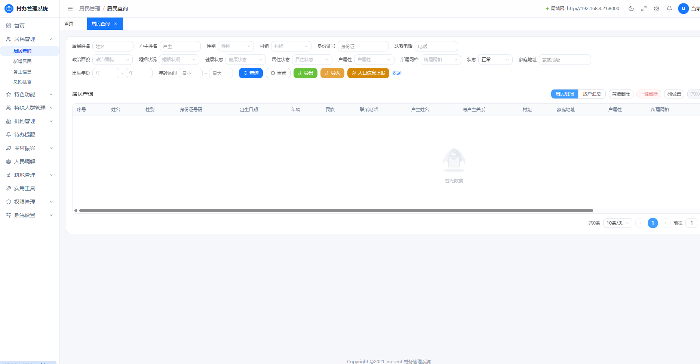
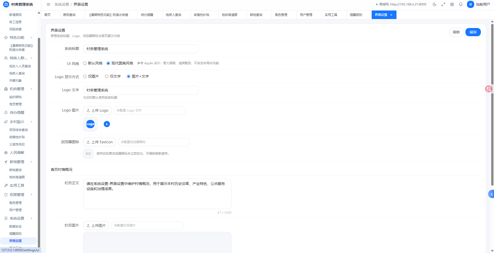
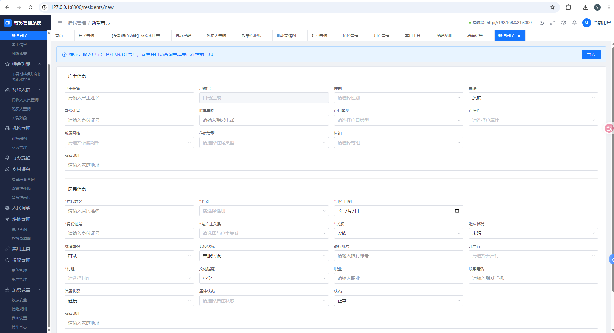
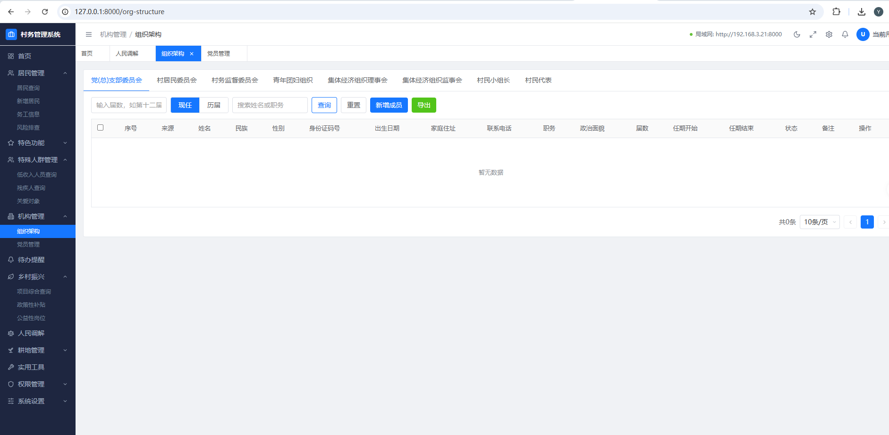

居民管理
一户一档，完整记录家庭成员信息、户籍变动、联系方式，支持多维度检索与批量导出。
从居民信息到党建工作，从社会救助到纠纷调解，一个平台管全村，让村干部减负、让老百姓省心。
一户一档，完整记录家庭成员信息、户籍变动、联系方式，支持多维度检索与批量导出。
按年龄、性别、劳动力、外出务工等维度自动生成统计报表，一键掌握全村人口结构。
低保、五保、临时救助全流程在线办理，自动核查资格条件，确保精准帮扶、阳光透明。
党员信息、三会一课、主题党日、党费收缴全流程数字化，让基层党建工作更有抓手。
邻里纠纷、土地矛盾等村级调解在线登记、跟踪、归档，做到事事有回音、件件有结果。
支持本地化部署、角色权限分级、操作日志全留痕，筑牢村级数据安全防线。

支持按姓名、身份证号、门牌号、联系电话等多维度组合查询， 秒级定位居民档案，查看家庭成员、户籍信息、帮扶记录等全景资料， 告别纸质档案翻找的低效与不便。

系统内置亮/暗模式一键切换，白天清爽明亮、夜间护眼舒适， 适应不同办公时段与使用习惯。还可自定义主题色、字号、布局密度等， 让每一位村干部都能调出最顺手的使用体验。

结构化表单引导式录入，必填项清晰标注，支持身份证号自动解析性别与出生日期， 减少手工输入工作量。家庭成员可关联添加，批量导入模板一键生成， 大幅提升档案建立与更新效率。

从党员发展到组织生活，从党费收缴到志愿服务，党建管理模块将村级党务工作全面数字化。 支部工作有记录、党员表现有量化、学习教育有抓手，真正发挥基层党组织战斗堡垒作用。
现代化界面设计，支持亮/暗模式自由切换，无论是白天办公还是夜间值班，都能舒适使用。


系统完全部署在村/镇本地服务器，数据不经过云端、不上传外网， 从源头上保障居民个人信息安全，符合政务数据安全与隐私保护要求。
所有居民档案、党建资料、救助记录等核心数据全部存储于本地服务器，不上传任何云端，物理隔离确保安全。
严格遵循个人信息保护法与政务数据安全规范，居民身份证号、手机号等敏感字段加密存储，分级授权查看。
每一条数据的增删改查均有完整审计日志，何人何时做了什么操作一目了然，满足政务数据追溯要求。
按角色 + 数据范围双重控制，村干部、计生专干、民政专干各负其责，敏感信息仅授权人员可查看。
采用 Django 后端 + React 前端的成熟技术栈，前后端分离架构，性能优异、维护便捷。 本地部署模式下，断网也能用，数据零外流。
Python 成熟 Web 框架
组件化前端架构
数据完全自主可控
断网环境正常运行
Pro 版支持局域网部署，村内多终端、多部门可同时接入使用， 数据实时同步、无需外网即可多人协作，既保证了数据安全，又大幅提升办公效率。
村支书、民政专干、计生专干等多人同时登录使用，各司其职、互不干扰。
一人录入、全员可见，数据变更即时同步到所有终端，告别信息不同步的困扰。
纯局域网运行，数据不经过公网传输，既安全又不依赖外部网络环境。
局域网内访问延迟低、速度快，操作流畅不卡顿，不受外部网络带宽限制。
想要了解更多功能细节？需要专属演示与实施咨询？ 直接添加 Hispirit 团队QQ，我们将为您提供一对一的产品讲解与试用指导。